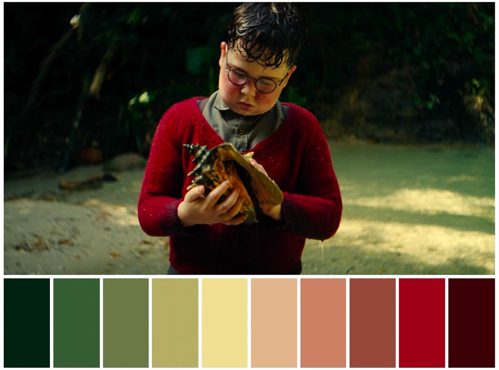

Perceptual Color Palette Extraction & Advanced Saliency Weighting

拒絕盲目的「最常出現像素」選色。系統深入圖像像素層級，結合局部對比度、邊緣細節強度、飽和度與中央主體偏置 (Center Bias) 計算每個像素的權重值，下放低資訊度的純黑或過曝白。即使點綴物所佔面積極小（如紅花、溫暖膚色），亦能完美捕捉，不被背景天際或綠地吞沒。
捨棄傳統不符合人類視覺習慣的 RGB 距離。系統將像素投射至現代極致感知色彩空間 OKLab / OKLCH 中，執行加權 MiniBatchKMeans 分群。再利用 Delta E Perceptual Distance 計算色差，自動將視覺上重疊、過於接近的候選色進行加權融合，確保調色盤色彩互不重複、展現高度多樣性。
雜亂的色彩分佈會破壞眼球的和諧感。系統首創「電影海報級」色帶排序機制。首先將提取的色彩按其在 OKLCH 中的色相族群 (Hue Bands) 分組，每組內以明度排列。最終色塊配置以深色作為左側錨點，中間穿插主體色彩與高飽和度情感色，右側收尾於明亮高光。
本工具內建四種核心的色彩提取權重分配。點擊下方按鈕，雷達矩陣會以動態圖形呈現該權重配置在主體聚焦、色彩多樣度與明暗控制等六個感知維度上的權重佔比。
本色彩校驗系統包含網頁應用程式、命令列批次處理腳本以及詳盡的演算法研發文檔。您可在此存取完整成果。
點擊上傳圖片並啟動參數調校。支援調配色彩數量、自訂輸出長寬、即時調整顯著性比重強度與電影感排序預覽，並可一鍵下載 PNG 高清圖。於專案目錄執行：
python app.py
支援目錄級的批次自動提取。內建 `--crop-source auto-palette` 功能，可全自動切除驗證圖片的舊有色塊列以加速校準：
python palette_generator.py valid-used --output-dir output
純手工實作線性 RGB 與 OKLab/OKLCH 感知空間雙向轉換數學公式。包含色域裁切與均勻階調分佈演算法，優於傳統 CIELAB 近似。
點擊查看詳細架構。涵蓋圖像加載、7層權重設計、Weighted KMeans 演算法、候選色 Perceptual Merge、色彩美化與輸出排版。
記錄專案從 v1.0 至 v2.1 各階段的變更。包括 MiniBatchKMeans 優化、飽和度保護、亮暗調分配邏輯重寫與高光補償修正路徑。
查閱專案源碼庫。核心程式碼 `palette_generator.py` 與 `app.py` 架構整潔並附完整英文註釋，可作為獨立模組導入其他圖像系統。